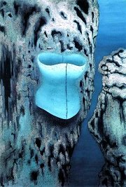
Toyen: Opuštěné doupě
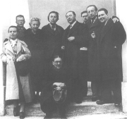
Toyen, Brouk, Bretonová, Breton, Nezval, Makovský, Éluard, Teige a Štyrský (dole)
|
ČESKÝ SURREALISMUS
Skupinu surrealistů v ČSR založil Vítězslav Nezval roku 1934. Postupně do ní vstoupilo několik bývalých členů zaniklého Devětsilu, například Teige, Biebl, Honzl, Štyrský nebo Toyen, i dalších umělců – výtvarník František Muzika, básník Jindřich Heisler, psychoanalytik Bohuslav Brouk. Program českých surrealistů se nijak nelišil od Bretonova. Vládlo zde i podobné sektářství – za svou pomníkovou tvorbu byl ze skupiny vyloučen sochař Vincenc Makovský.
Už v roce 1938 přišla první krize. Nezval se pokusil skupinu rozpustit, protože nesouhlasil s kritikou Sovětského svazu, tamějších politických procesů a stalinismu. Nakonec byl výsledkem pouze Nezvalův odchod, protože surrealisté pokračovali ve své činnosti pod Teigovým vedením. V době okupace byla činnost skupiny ochromena, protože nacisté považovali surrealismus i ostatní avantgardní směry za „zvrhlé umění“ a všemožně ho potlačovali. Krátké období poválečné svobody a euforie vystřídalo opětovné pronásledování, tentokrát komunisty. Čeští surrealisté vydávali samizdatové sborníky Znamení zvěrokruhu a Objekt, roku 1969 vyšlo oficiálně první číslo časopisu Analogon, připravené druhé číslo ale mohlo kvůli normalizaci vyjít až roku 1990. Teiga nahradil v čele skupiny teoretik Vratislav Effenberger a po jeho smrti filmový režisér Jan Švankmajer.
K významným českým surrealistům 2. poloviny 20. století patří Zbyněk Havlíček nebo Milan Nápravník. K surrealismu má blízko také tvorba členů Skupiny Ra (Tikal, Istler), malířů Františka Janouška a Mikuláše Medka, spisovatelů Bohumila Hrabala a Pavla Řezníčka nebo teoretiků Záviše Kalandry a Roberta Kalivody.
|
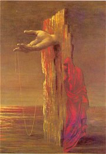
Muzika: Velké rekviem
Zopakuj si základní znaky surrealismu.
Co je automatické psaní?
Které další techniky surrealisté používali?
Které zahraniční surrealisty znáš?
Jaké hry hráli?
|
Vítězslav Nezval (1900-1958)
Nezval se narodil v Biskoupkách u Moravského Krumlova a zemřel v Praze. Byl členem Devětsilu a tvůrcem poetismu – sbírky Pantomima nebo Básně noci, báseň Edison, cyklus Abeceda, manifest Papoušek na motocyklu. Roku 1934 založil Skupinu surrealistů v ČSR, ve které působil 4 roky jako její předseda. Z tohoto období pocházejí jeho básnické sbírky Žena v množném čísle, Praha s prsty deště a Absolutní hrobař, kterou vyzdobil vlastními dekalky, a prózy Pražský chodec nebo Valérie a týden divů. Krátce používal pseudonym Robert David. Po roce 1948 začal psát budovatelskou poezii – skladby Zpěv míru a Stalin. Věnoval se rovněž dramatické tvorbě – Manon Lescaut. Zajímavá je také jeho kniha vzpomínek Z mého života.
Která další Nezvalova díla znáš?
Četl/a jsi je? Jak se ti líbila?
Zjisti, co je dekalkománie a jak souvisí s Nezvalovým dílem.
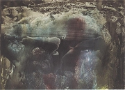
Nezvalův dekalk
|
Vítězslav Nezval: Žena v množném čísle
Hlavním tématem Nezvalovy básnické sbírky Žena v množném čísle je žena v nejrůznějších podobách. Najdeme zde surrealistickou obdobu starozákonní Písně písní a řadu dalších básní vytvořených technikou automatického psaní.
Vítězslav Nezval: Valérie a týden divů
Černý román Valérie a týden divů vyšel až roku 1945, přestože vznikl už ve 30. letech. Odehrává se ve snové atmosféře a jeho fantastický děj je plný překvapivých zvratů a nadpřirozených úkazů. Námětově čerpá z tajuplných až hororových černých románů, které rozvíjí o motivy incestu a surrealistické tvůrčí postupy. Vystupuje zde upír Richard řečený konstábl, který se mění v krvelačného Tchoře, nevinná panna Valérie, její bratr a zároveň milenec Orlík, její babička a řada vedlejších postav.
|
Roztržka mezi surrealisty
Přestože Nezval surrealistickou skupinu založil a byl jejím předsedou, věnoval se zároveň tradiční tvorbě, kterou publikoval pod pseudonymem Robert David. Roztržka s ostatními členy přišla už roku 1938, kdy na protest proti narůstající kritice poměrů v Sovětském svazu skupinu demonstrativně rozpustil. Ostatní členové ale pokračovali ve své činnosti pod vedením Karla Teiga, který zaslepeným stoupencům stalinismu odpověděl knihou Surrealismus proti proudu.
Srovnej Nezvalovu Píseň písní s biblickým textem.
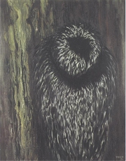
Toyen: Hlas lesa
Jak na tebe působí ukázky z Nezvalova románu?
Srovnej románovou předlohu s filmovou adaptací.
|
Karel Teige (1900-1951)
Teige se narodil v Praze, kde také zemřel. Byl vůdčí postavou Devětsilu, redigoval časopis ReD, věnoval se typografii a vytvářel fotografické koláže. Propagoval kubismus, proletářské umění, poetismus, konstruktivismus a avantgardní architekturu. Po Nezvalově odchodu se stal předsedou surrealistické skupiny. Teige je autorem přednášky Nové umění proletářské, manifestu Poetismus, souborů studií Stavba a báseň, Film nebo O humoru, klaunech a dadaistech (Svět, který se směje a Svět, který voní), sborníku Surrealismus proti proudu, pamfletu Jarmark umění a řady článků. Knihu Fenomenologie umění nedokončil.
|
Karel Teige: Fenomenologie umění
Nedokončená studie Fenomenologie umění měla shrnout Teigovy názory na uměleckou tvorbu. Od Bretona převzal klíčové pojmy vnitřní a vnější model, které dále rozpracoval do ucelené teorie.
Teige nemohl po roce 1948 veřejně působit. Tzv. teigovština se měla stát odstrašujícím příkladem pro všechny spisovatele. Hon, který na něj uspořádali komunističtí kritikové, stoupenci budovatelské poezie a socialistického realismu, neunesl a spáchal sebevraždu.
|
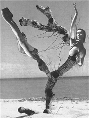
Teige: Koláž č. 353
Vysvětli pojmy vnější a vnitřní model.
|
Jindřich Heisler (1914-1953)
Heisler se narodil v Chrastu u Chrudimi a zemřel v Paříži. Od roku 1938 byl členem surrealistické skupiny. Za protektorátu se skrýval v bytě malířky Toyen. Spolu s ní emigroval roku 1947 do Francie, kde vydával časopis Neon. Jeho knihu Na jehlách těchto dní doprovázejí fotografie od Jindřicha Štyrského. Heisler napsal básně ke grafickým cyklům Toyen Přízraky pouště, Střelnice a Schovej se, válko! Vrcholem propojení textu s obrazem je jeho sbírka Z kasemat spánku, na jejíž obrazové podobě se rovněž podílela malířka Toyen.
|
Heisler a Toyen: Z kasemat spánku
Básnická sbírka Z kasemat spánku vyšla v netradiční grafické úpravě založené na montáži textů a aranžovaných fotografií. Vizuální část, jejíž autorkou je malířka Toyen, motivicky vychází z Heislerova textu, originálním způsobem ho rozvíjí a dává mu nové významy.
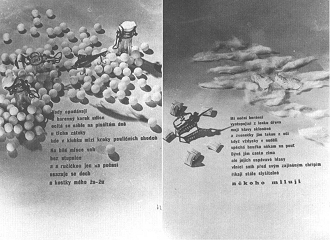
Heisler a Toyen: Dolík v posteli, Usínám
|
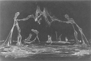
Heisler: Ze stejného těsta
Jak se ti líbí ukázky z Heislerovy básnické sbírky?
Co víš o malířce Toyen?
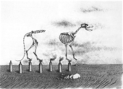
Toyen: Schovej se, válko!
|
Vratislav Effenberger
(1923-1986)
Effenberger se narodil v Nymburku a zemřel v Praze. Po roce 1945 obnovil spolu s Teigem a dalšími mladými umělci surrealistickou skupinu, jejímž předsedou se později stal. Přestože měl vysokoškolské vzdělání, v 50. letech a po podpisu Charty 77 se musel živit jako dělník. Napsal odborné knihy Henri Rousseau a Výtvarné projevy surrealismu, tzv. pseudoscénáře vyšly pod názvem Surovost života a cynismus fantazie.
|
Zbyněk Havlíček: Otevřít po mé smrti
Kniha Otevřít po mé smrti vyšla až roku 1994. Shrnuje Havlíčkovu básnickou tvorbu, která nemohla za jeho života vyjít a kolovala pouze v opisech. Některé z jeho veršů reagují specificky surrealistickým způsobem na nesvobodu v totalitním Československu padesátých let.
|
Zbyněk Havlíček (1922-1969)
Havlíček se narodil v Jilemnici a zemřel v Praze. Byl synem spisovatele Jaroslava Havlíčka. Pracoval jako psycholog v psychiatrických ústavech. Je autorem řady básnických sbírek a překladu Nadeauových Dějin surrealismu.
Srovnej Havlíčkovy básně s Nezvalovými.
Která z Havlíčkových básní se ti líbí nejvíce? Proč?
|
Jan Švankmajer (1934)
Švankmajer je nejvýraznější osobností českého surrealismu. Hmatovou stránkou skutečnosti se zabývají jeho gestické a taktilní objekty nebo básně. Některé artefakty použil ve svých filmech Něco z Alenky, Možnosti dialogu, Konec stalinismu v Čechách, Lekce Faust, Spiklenci slasti nebo Otesánek, které vynikají originálními náměty, výtvarným zpracováním a kombinací různých technik animace s živými herci. Jako animátor se podílel na filmu Adéla ještě nevečeřela, televizním seriálu Návštěvníci nebo představeních Laterny magiky.
Znáš Švankmajerovy filmy? Doporučil/a bys je spolužákům?
|
Milan Nápravník: Moták
Mezi prózami shrnutými do sbírky Moták (Kniha Moták) vyniká text Předmoucha. Vypravěčem je titulní postava, která osciluje mezi zvířetem (mouchou) a člověkem. Živočišnost se v její povaze mísí s existenciálními pocity. Experimentální text je vystavěn na asociacích a věty plynou v daktylském rytmu, který ještě posilují občasné rýmy.
|
Milan Nápravník (1931)
Nápravník emigroval roku 1868 do Německa. Je autorem sbírek Básně, návěstí a pohyby nebo Vůle k noci, knihy rytmizovaných próz Moták a „surrealistických protokolů“ Na břehu. Knižně vyšly také jeho fotografické inversáže.
Charakterizuj hlavní postavu textu Předmoucha.
Nakresli ji.
Dal by tento text zdramatizovat? Zkus to.
Co je daktyl?
|
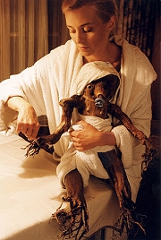
Švankmajer: Otesánek
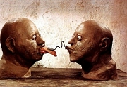
Švankmajer: Možnosti dialogu
|
Pavel Řezníček: Strop
Strop je román zabydlený různými podivíny. Dva z nich si ve svém bytě udělají bažinu, do které lákají další lidi. Nouze tu není ani o groteskní situace a iracionální výjevy. V knize například vystupuje slepecká hůl nebo mužské sperma. Řezníček je programově amorální. Jeho postavy nevyznávají vznešené ani běžné hodnoty, snaží se pouze uspokojit svoje podivné choutky.
Srovnej Řezníčkův román s Nezvalovým.
Další čeští surrealisté a jejich díla
Karel Hynek: Babička po pitvě
Petr Král: Karel Teige a film, Fotografie v surrealismu
Karel Šebek: Probuď se anděli, peklo spí, Dívej se do tmy, je tak barevná
|
Pavel Řezníček (1942)
Řezníček vystřídal řadu dělnických povolání, pracoval jako stavební dělník nebo skladník. Oficiálně začaly jeho texty vycházet až po roce 1989. Napsal sbírku Kráter Resnik a jiné básně a romány Strop, Vedro nebo Zvířata. Brněnskou uměleckou bohému zachytil v knize Hvězdy kvelbu.
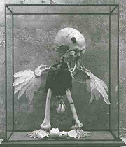
Švankmajer: Kabinet přírodnin I
|
Internetové stránky
Surrealistická skupina
Analogon č. 17
Sárközi: Osudy meziválečné avantgardy a Karel Teige
Sárközi: Český surrealismus po 2. sv. válce
Nápravník: Předmoucha
Medek, malíř
Švankmajer
Švankmajer
Brouk, psychoanalytik
Filmy
Otesánek, režie J.Švankmajer
Valérie a týden divů, režie J.Jireš
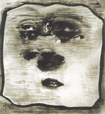
Štyrský: Všudypřítomné oko
|
Doporučená četba
Analogon (časopis)
Ani labuť ani Lůna, Sborník k 100. výročí smrti K.H.Máchy, Otto Jirsák, Praha 1936
Český surrealismus 1919-1953, Skupina surrealistů v ČSR, Argo, Praha 1996 (katalog k výstavě)
Effenberger Vratislav: Realita a poezie, Mladá fronta, Praha 1969
Effenberger, V.: Výtvarné projevy surrealismu, Odeon, Praha 1969
Havlíček, Zbyněk: Otevřít po mé smrti, Český spisovatel, Praha 1994
Heisler, Jindřich: Z kasemat spánku, Torst, Praha 1999
Hynek, Karel: S vyloučením veřejnosti, Torst, Praha 1998
Kalandra, Záviš: Intelektuál a revoluce, Československý spisovatel, Praha 1994
Král, Petr: Fotografie v surrealismu, Torst, Praha 1994
Nádvorníková, Alena: K surrealismu, Torst, Praha 1998
Nápravník, Milan: Kniha moták, Mladá fronta, Praha 1995
Nezval, Vítězslav: Manifesty, eseje a kritické projevy z let 1931-1941, Praha 1974
Nezval, V.: Valérie a týden divů, Kentaur, Praha 1994
Nezval, V.: Žena v množném čísle, Kentaur, Praha 1993
Prášková-Honzíková, Marie: Když hoří obrazy, Vzpomínky, Melantrich, Praha 1989
Surrealistické východisko, Praha 1969
Roztrhané panenky, IN: Aluze 1/2001 (Skupina Ra)
Řezníček, Pavel: Hvězdy kvelbu, Host, Brno 1992
Řezníček, P.: Strop, Mladá fronta, Praha 1991
Šmejkal, František: Skupina Ra (katalog k výstavě)
Štyrský, Jindřich: Sny (1925-1940), Argo, Praha 2003
Švankmajer, Jan: Hmat a imaginace, Kozoroh
Teige, Karel: Výbor z díla (3 svazky)
Třetí archa, 1970 – 1991, Praha 1992 (katalog k výstavě)
Zvěrokruh 1, 2..., Torst, Praha 2004
|
Vypracuj písemný referát o některé z uvedených knih.
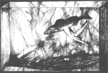
Štyrský: Sen o rybách I
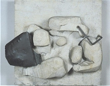
Makovský: Ležící žena
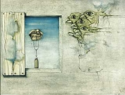
Medek: Dýmající hostina
|
|